This HOL should take about 30 minutes.
Hyper-V enabled PC. Required for the Visual Studio UWP and Visual Studio Android emulators.
Internet connection is required in order to setup and run the demos.
You will need Visual Studio 2015 Professional+ or Community edition with Update 3
To download Visual Studio 2015 Community edition, https://www.visualstudio.com/vs/mobile-app-development/
Visual Studio Android emulator: https://www.visualstudio.com/vs/msft-android-emulator/
If you encounter issues with connecting Visual Studio debugger with the Visual Studio I would recommend following the steps from this blog article: http://dotnetbyexample.blogspot.ca/2016/02/fix-for-could-not-connect-to-debugger.html
Go to the Solutions folder with this content, locate the HOL1.zip file, extract it to a new folder under your Documents folder.
In the Documents\HOL1\src\Start\GPSImageTag locate the *.sln. Double click the file to open the solution in Visual Studio
Here we want to check to make sure our development setup is good. First we need to set the GPsImageTag.UWP (1) as the Startup Project (2).
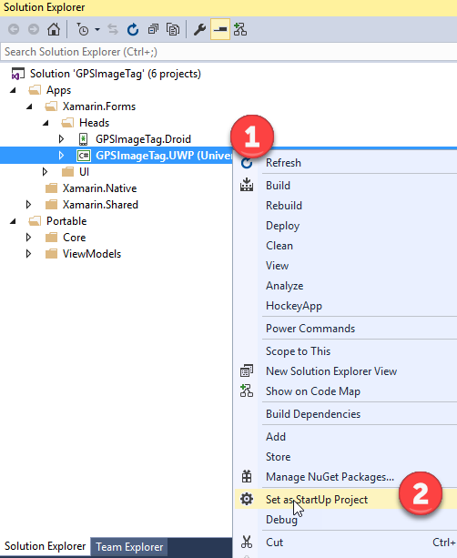
Press F5 to run the UWP app.
Here we want to check everything is setup correctly. In the camera page take a photo (1). Within the camera window snap a picture (2).
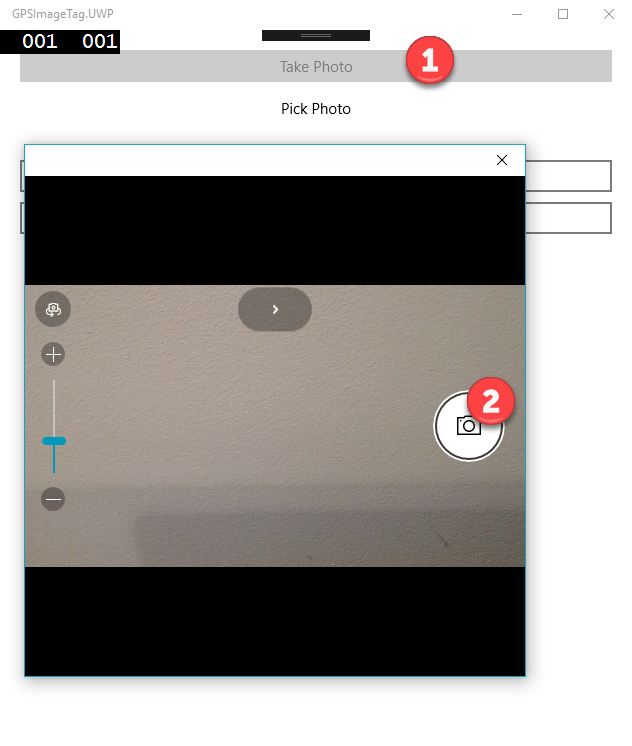
(Optional Android steps) Select the GPSImageTag.Droid project (1). Click on the Set as Startup Project (2).
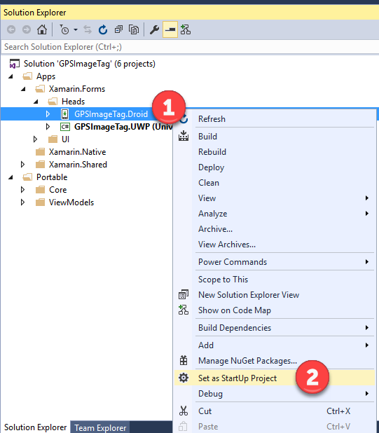
(Optional Android steps) Press F5 to run the Android app.
(Optional Android steps) Here we test to make sure everything is setup correctly. Click on the Take Photo button (1). Next click on the camera button (2) and then click the Check button (3).
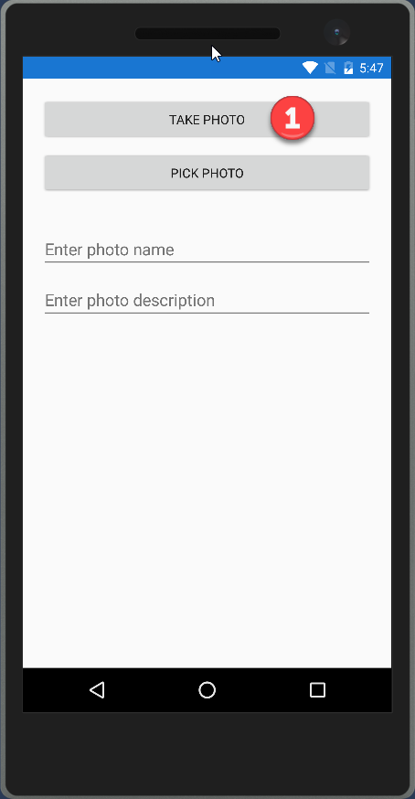 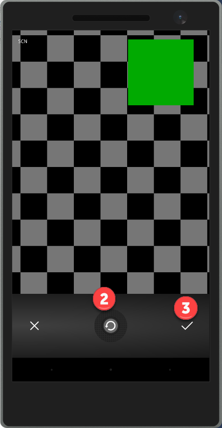
For this Hands on Lab we will be leveraging Azure to share our photos across devices. We will be setting up Mobile App Services to store our photo data.
To setup the Azure Account Using a browser navigate to the following url: https://azure.microsoft.com
On the Azure portal page, click on the Start free button.
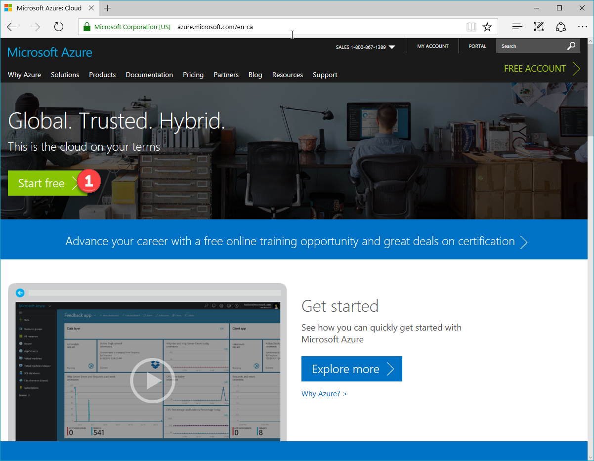
Click on the Add button and enter the name XamarinDemos for the new resource group. The name only needs to be unique with the same Azure subscription. First, open the resource group window (1). Next, click the Add button (2).
In the create resource group window, enter the name XamarinDemos(3). Next, make sure to set the resource group location to your closet region from the drop list (4). Last step, click on the Create button (5)
Next, we need to add in a Mobile Apps service to our resource group. Click on the Add button (1). Enter “Mobile Apps QuickStart” into the text search (2). Click on the Mobile Apps QuickStart (3). Finally click on the Create button (4)
At this step we need to name the new Mobile App service. The name has to be globally unique on Azure. For this setup process for example I’ve used the name “gpsimagetagmobileservice” (1). Next, we need to setup the App service plan (2).
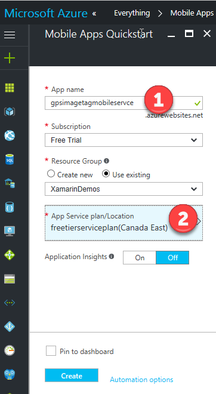
This will display a new blade where we can click on the Create New option (1).
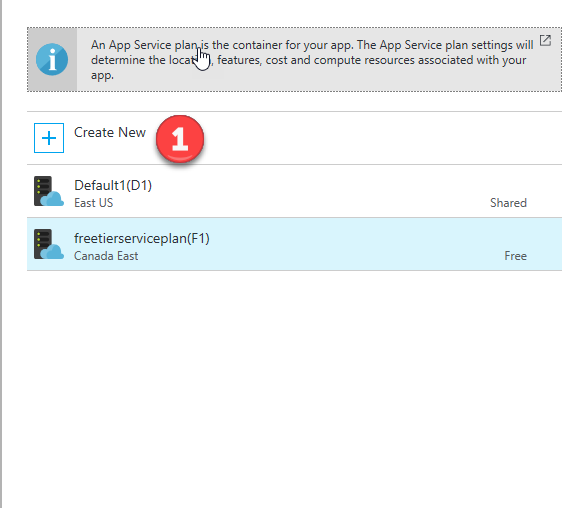
In the new blade panel, we are setting up the service plan. You need to give the App Service plan unique names within your Azure account (1). Select \ Location to a region close to you (2). We will change the pricing tier to the free tier for the hands on labs (3).
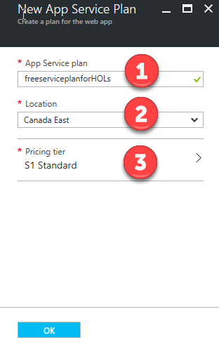
What we are setting is the free tier. By default, Azure sets S1 Tier as the default. For a learning hands on lab we don’t need that level of service. Make sure to click on the View all option (1). Next, we need to scroll down the list of service tiers until we locate the F1 Free tier. Select the F1 Free tier (2). Finally, click on the Select(3).
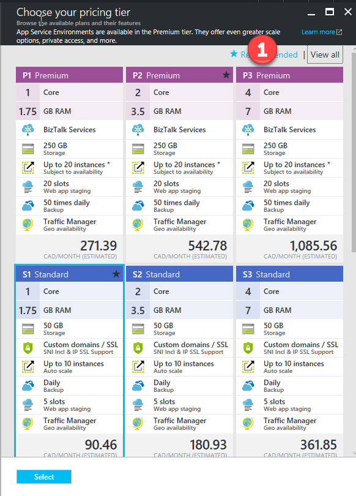 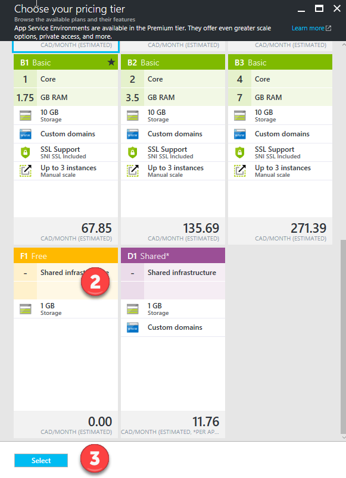
Back on the New App App Service Plan blade click on the OK button (1).
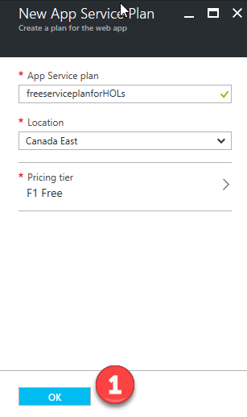
Back on the Mobile Apps QuickStart blade, click on the Create button (1).
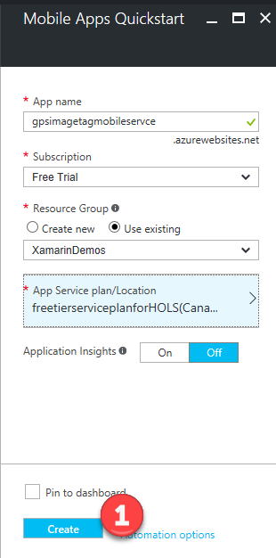
Now we need to create the Easy table within our mobile app service. Open the mobile app service we’ve just created. Locate the Easy tables option (1). Next, click on the Add button (2).
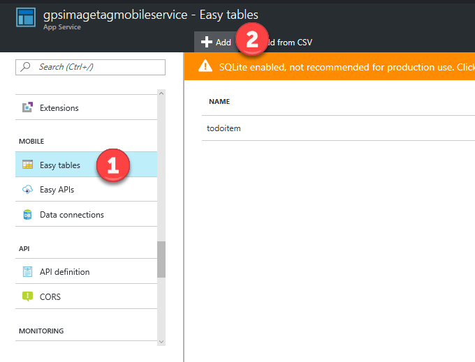
On the Add a table blade. Enter the name of “photo” for the table (1). Then, press the OK button (2).
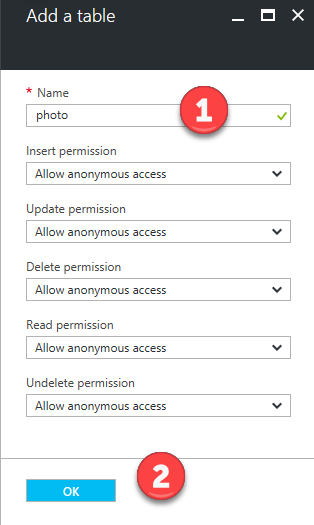
Open the photo table. We need to update the table schema to have the correct fields for our application. See the highlight fields in the image below for the column names and data type to add.
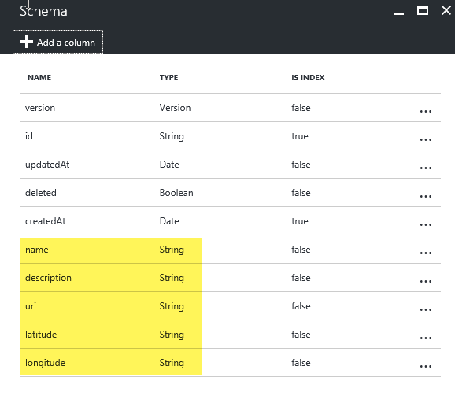
Next, we need to copy the url of our new mobile service. We will need this later on for our mobile app as the endpoint to call for the mobile services api. Open the ‘gpsimagetagmobileservice’. On the App Service blade select (1). Then copy the url (2) into notepad for later referencen.
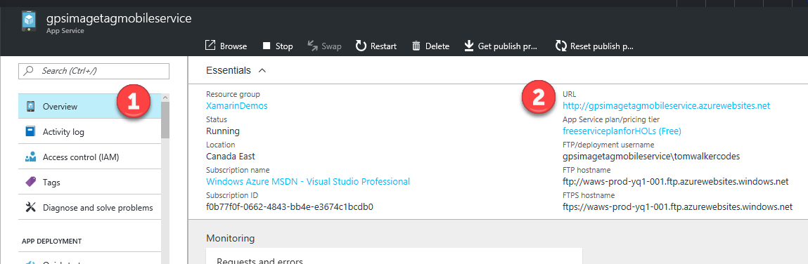
To store our picture files in Azure we need to setup an Azure Storage account. We need to add a ‘Storage account’ service to our resource group. Click the Add button (1). Enter the Storage account as the search option (2). Make sure to select the Storage account with the category of ‘Storage’ (3)
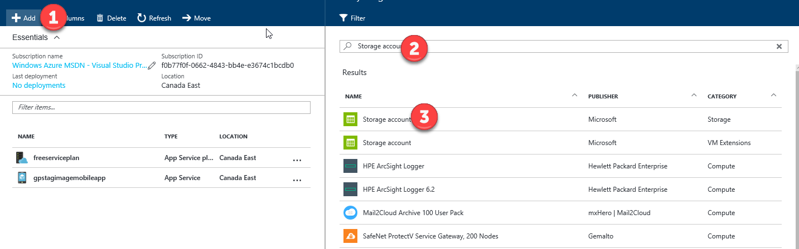
Make sure to give the storage account a unique name. For this setup process I’ve chosen gpsimagetagstorage as the name (1). Also, make sure to select Locally-redundant storage (LRS) for the replication setting (2). Click the Create button (3).
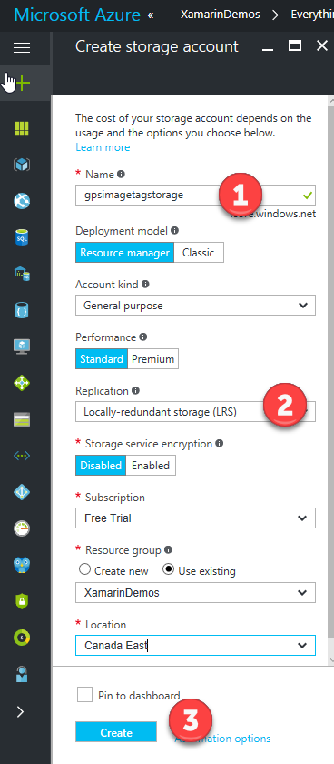
After the Azure setup process is complete for the storage account, click on Refresh in the XamarinDemos group to update the list of services. (1)
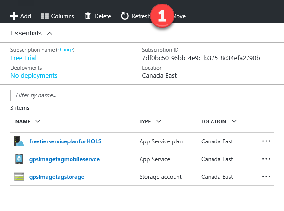
Select the storage account
What we need to do here is create a specifically-named container within our Azure Storage account for the picture files. Select the Overview option (1). Next, select the Blobs option (2).
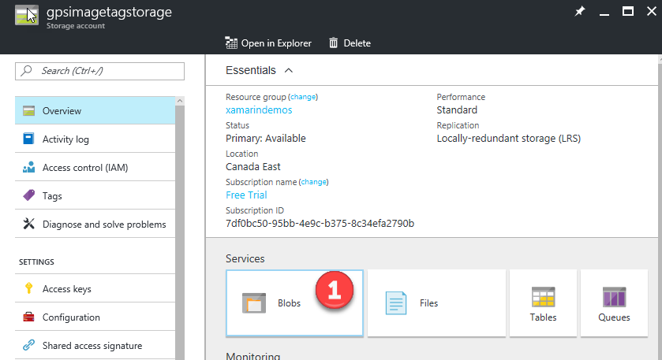
In the Blob service blade, click on the Container button (1).
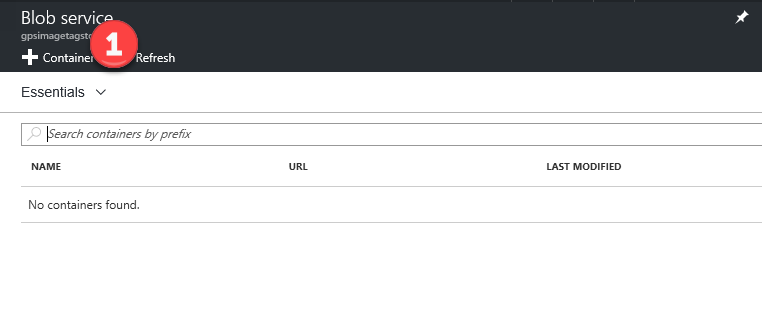
In the New container blade, enter the name of “photos” (1). We need to set the security access to the blob container. To make this available for our mobile app we want give public read access. Set the Access type to ‘Blob’. Finally, click on the Create button (3)
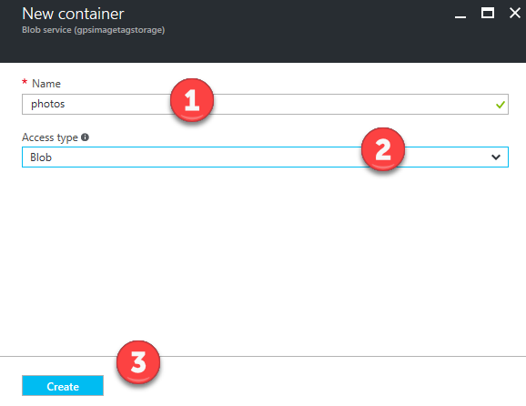
Next, In the settings section select Access keys (1). Copy both the Storage account name (2) and the key 1 value (3). We will need both of these to complete the data setup for the hands on lab.
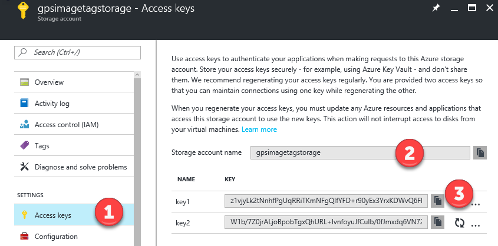
Go back to Visual Studio with the hands on lab 1 opened.
We need to add the code for AzureStorage services into the GPSImageTag.Shared.API. Normally we would have to provide code in each platform project to work with the AzureStorage service. Fortunately, we can use a shared project to contain the common code for the upload feature.
Select the GPSImageTag.Shared.API project (1). Bring up the pop menu and select the Add option (2). Next, click the Existing Item (3).
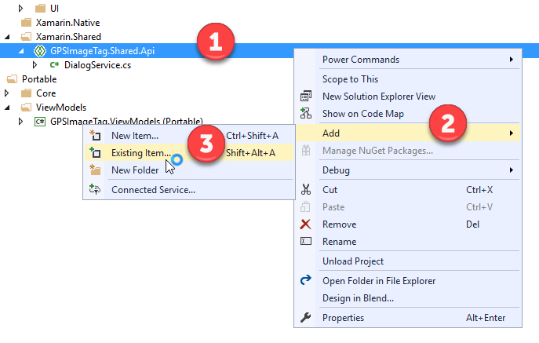
Select the files AzureStorageService.cs and Configuration.cs from the folder the Documents > HOL 1 > SRC > Start > Code Files> Services (1). Next, click the Add button.
Open the Configuration.cs file in the GPSImageTag.Shared.API. We need to update the Azure Storage connection string. Copy in the Azure Storage Account name and Key copied from the Azure portal to the placed indicated.
In this step we will be adding the mobile service class file in the GSPImageTag.Core. Select the Services folder in the GPsImageTag.Core project. Now, in the pop up menu select the Add option (2). Next, select the Existing Item option (3).
Select the file AzureService.cs in the folder Documents > Demo2.3 > SRC > Start > Code Files> Service (1). Next, click the Add button.
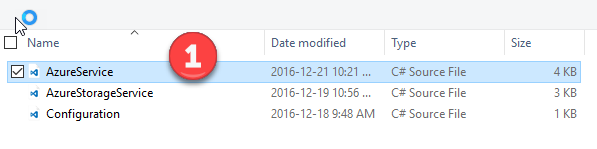
Open the AzureService.cs file in the GPSImageTag.Core project. Update the MobileServiceUrl with the Url you copied earlier for the Azure mobile service from the Azure portal.
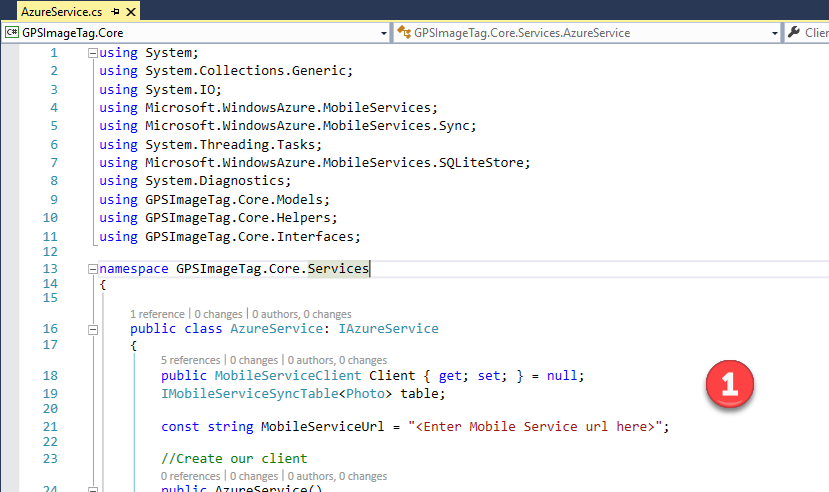
Open up CameraPageViewModel.cs as we need to add a call to the upload code for Azure mobile service.
In the CameraPageViewModel.cs add in the following line of code for the Azure Mobile Service (1).
private IAzureService mobileService;
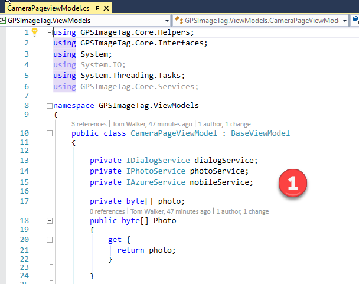
In the constructor of the CameraPageviewModel.cs we need to initialize the mobileServcie. Enter the following line of code (1).
mobileService = ServiceManager.GetObject<IAzureService>();
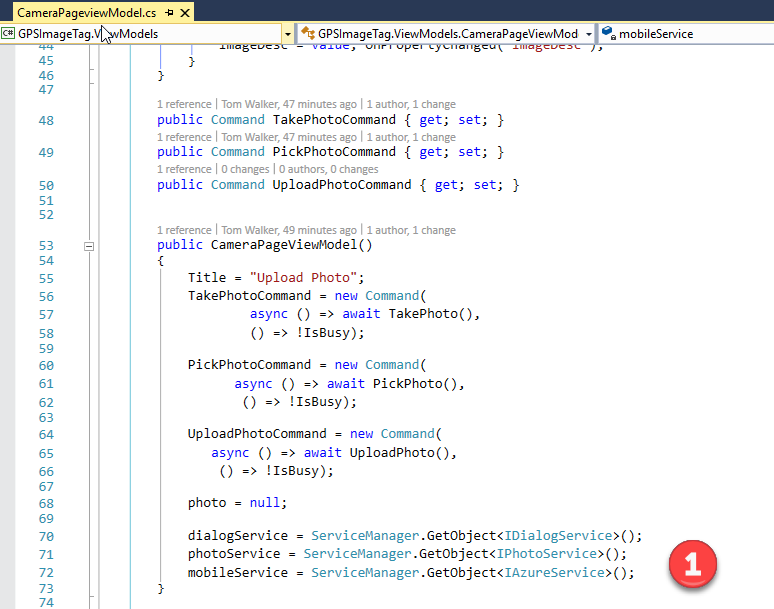
In the CameraPageviewModel.cs we will need to update the UploadPhoto method to call the mobile service for adding a photo to Azure. Add in the following line of code.
await mobileService.AddPhoto(photo, name, desc);
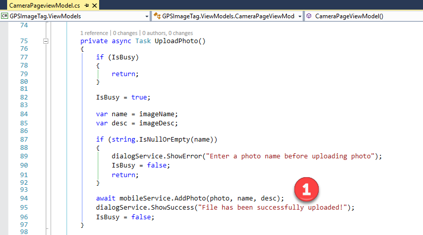
Now that we’ve update the CameraPageviewModel we need to update the UI in CameraPage.xaml. Add in the following Xaml code for the Upload Photo button (1).
<Button x:Name="ButtonUploadPhoto" Command="{Binding UploadPhotoCommand}" Text="Upload Photo"/>
Now, we need to update the service registration within each of the Xamarin.Form head projects.
Open the MainActivity.cs file in the GPSImageTag.Droid project. Update the RegisterService function to include the registration of AzureStorageService and AzureService. Add the following code lines to the RegisterService function.
ServiceManager.Register<IAzureStorageService>(new AzureStorageService());
ServiceManager.Register<IAzureService>(new AzureService());
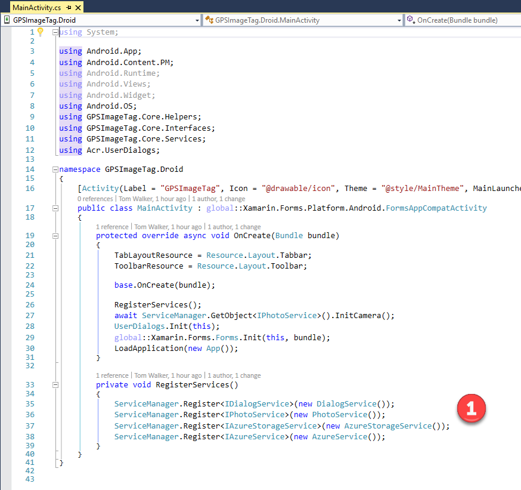
Open the App.xaml.cs file in the GPSImageTag.UWP project. Update the RegisterService function to include the registration of AzureStorageServcie and AzureService. Add the follow code lines to the RegisterService function (1).
ServiceManager.Register<IAzureStorageService>(new AzureStorageService());
ServiceManager.Register<IAzureService>(new AzureService());
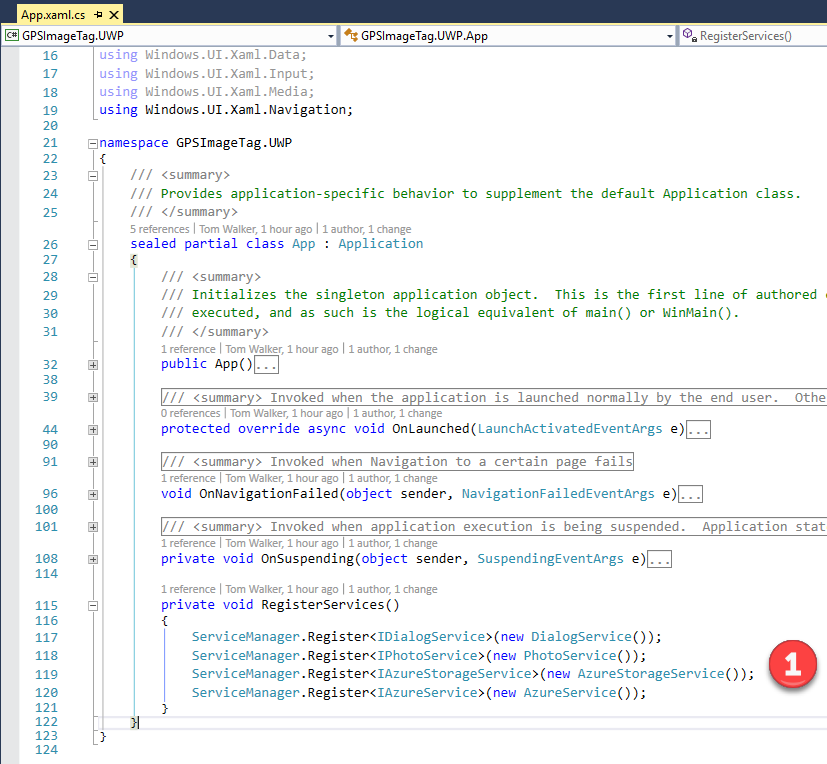
Next we need to set the GPSImageTag.UWP (1) as the Startup Project (2).
Press F5 to run the UWP app.
In the camera page take a photo (1). Within the camera window snap a picture (2). Enter the photo name and descry (3). Finally click on the Upload Photo button (4). In may take some time for the image to upload.
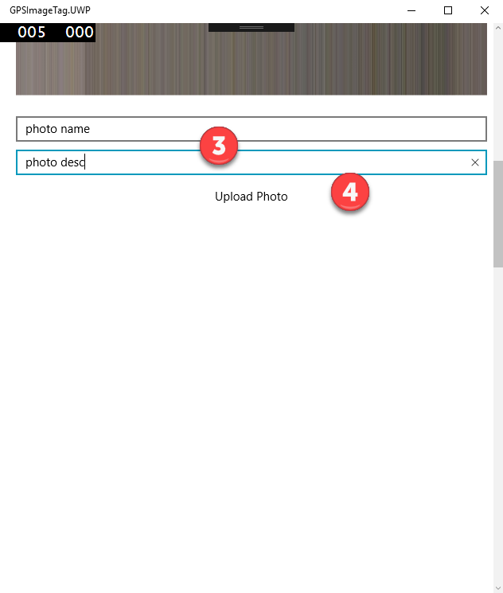
(Optional Android steps) Select the GPSImageTag.Droid project (1). Click on the Set as Startup Project (2).
(Optional Android steps) Press F5 to run the Android app.
(Optional Android steps) In the camera page take a photo (1). Within the camera window snap a picture. Enter the photo name and descry (3). Finally click on the Upload Photo button (4).
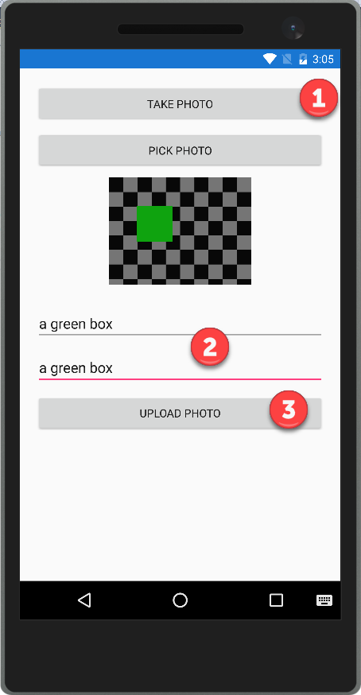
Log back into your Azure account. Open the mobile app service you have created. Enter ‘easy’ into the search field to narrow down the properties list (1). Click on the Easy tables (2). Next, click on the photo (3).
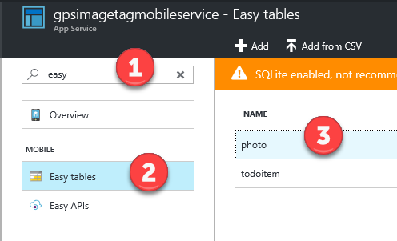
Confirm that the photo you’ve uploaded exists in the table. (1)
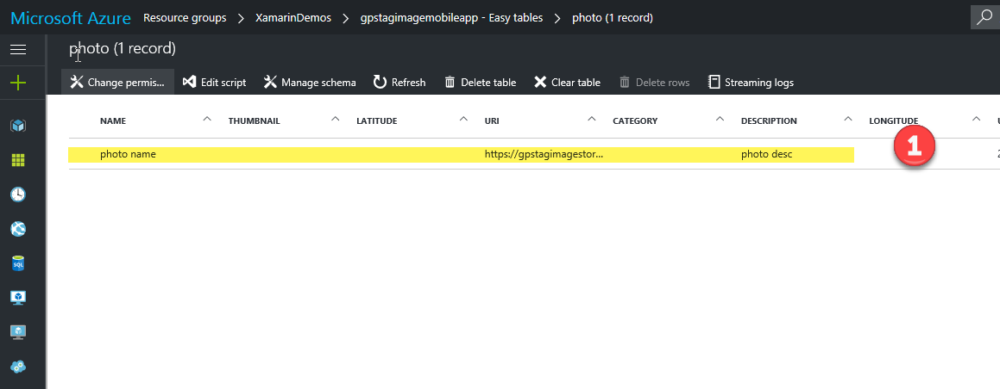
Now that we have everything configured to upload our photos from our Xamarin.Form app. Let’s now take a look at how we can download the photos and data down to our app.
In the GPSImageTab.ViewModels project lets add in a new viewmodel for the new page. Select the ViewModels folder. Bring up the pop menu select the Add option (2). Next, select Existing Item option (3).
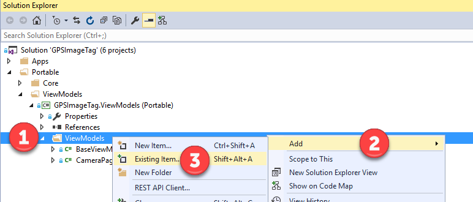
The file we will be adding is the PhotosPageViewModel.cs found in the folder in Documents\HOL 1\src\ Start \Code Files\ViewModels (1).
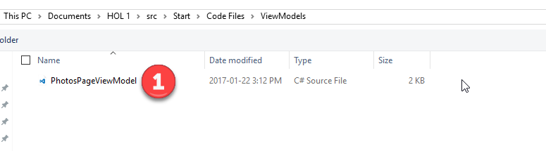
Now we need to create a new PhotoPage that will use the new viewmodel. In the GPSImageTag project select the Pages folder (1). Bring up the pop menu click the Add (2). Then select New Item (3).
In the Add New Item dialog window, select Cross-Platform (1). Next select Forms Xaml Page template (2). Give the new page the name of PhotosPage.xaml (3). Click the Add button (4).
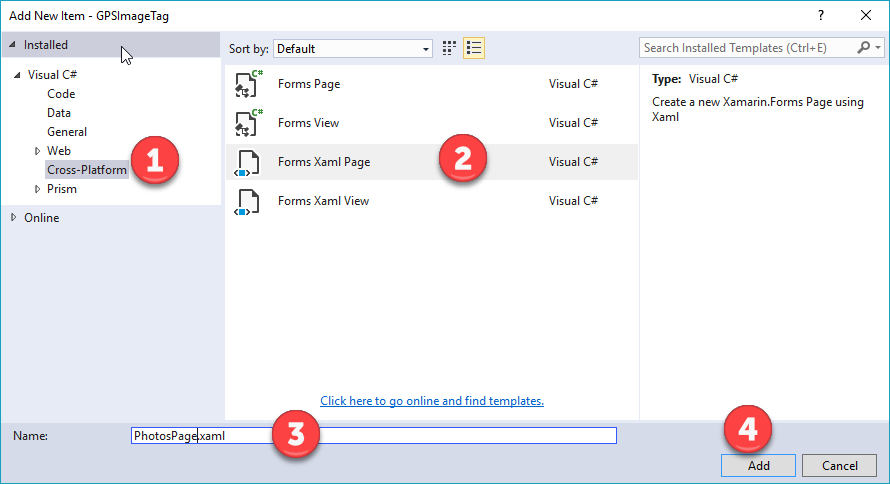
Open the new PhotoPage.xaml in the Xaml view and replace the Xaml code with the code below (1).
<?xml version="1.0" encoding="utf-8" ?>
<ContentPage xmlns="http://xamarin.com/schemas/2014/forms"
xmlns:x="http://schemas.microsoft.com/winfx/2009/xaml"
xmlns:local="clr-namespace:GPSImageTag"
x:Class="GPSImageTag.PhotosPage"
Title="{Binding Title}">
<ContentPage.Content>
<StackLayout Spacing="0" Margin="0,10,0,0" Padding="10">
<Button x:Name="btnSyncPhotos" Text="Sync Photos" Command="{Binding GetPhotosCommand}"/>
<ActivityIndicator IsRunning="{Binding IsBusy}" IsVisible="{Binding IsBusy}"/>
<ListView x:Name="ListViewPhotos"
ItemsSource="{Binding Photos}" HasUnevenRows="True">
<ListView.ItemTemplate>
<DataTemplate>
<ViewCell>
<Grid Padding="10">
<Grid.RowDefinitions>
<RowDefinition Height="Auto"/>
<RowDefinition Height="Auto"/>
</Grid.RowDefinitions>
<Grid.ColumnDefinitions>
<ColumnDefinition Width="Auto"/>
<ColumnDefinition Width="*"/>
</Grid.ColumnDefinitions>
<Image HeightRequest="75"
HorizontalOptions="CenterAndExpand"
VerticalOptions="CenterAndExpand"
Aspect="AspectFill"
WidthRequest="75"
Grid.RowSpan="2"
Source="{Binding Uri}"/>
<Label Grid.Column="1"
Grid.Row="0"
VerticalOptions="Start"
Text="{Binding Name}"/>
<Label Grid.Column="1"
Grid.Row="1"
Text="{Binding Description}"/>
</Grid>
</ViewCell>
</DataTemplate>
</ListView.ItemTemplate>
</ListView>
</StackLayout>
</ContentPage.Content>
</ContentPage>
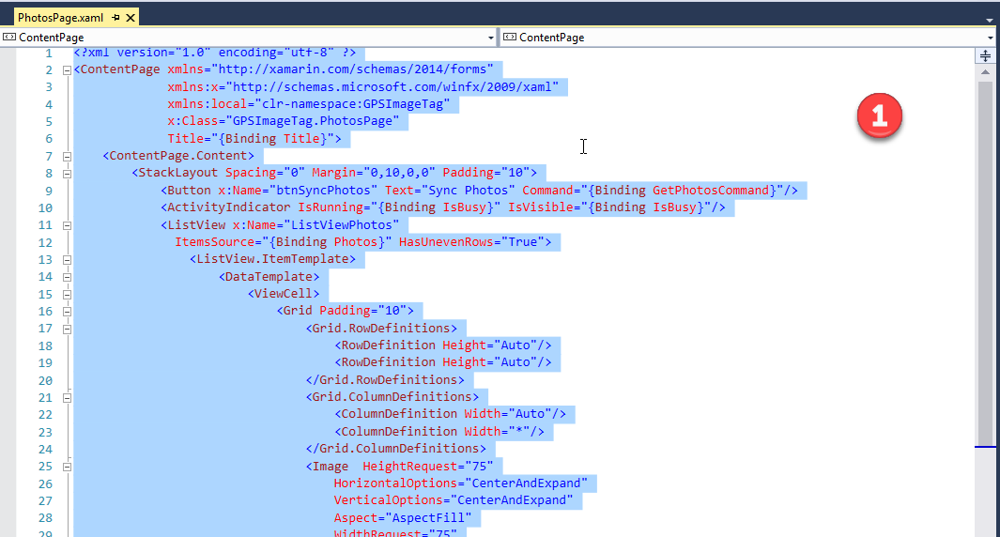
Next, we need to set the page data context to the PhotosPageViewModel. Open the Photospage.xaml.cs and replace the code with the code below (1).
using GPSImageTag.ViewModels;
using Xamarin.Forms;
namespace GPSImageTag
{
public partial class PhotosPage : ContentPage
{
PhotosPageViewModel vm;
public PhotosPage()
{
InitializeComponent();
vm = new PhotosPageViewModel();
BindingContext = vm;
}
}
}
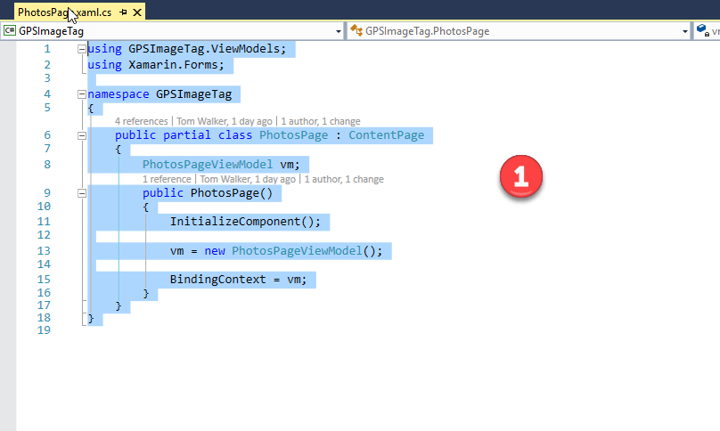
Now that we have two pages within our app we need to add in additional page navigation to navigate between the pages. In the GPSImageTag project select the Pages folder (1). Bring up the pop menu click the Add (2). Then select New Item (3).
In the Add New Item dialog window, select Cross-Platform (1). Next select Forms Xaml Page template (2). Give the new page the name of StartPage.xaml (3). Click the Add button (4).
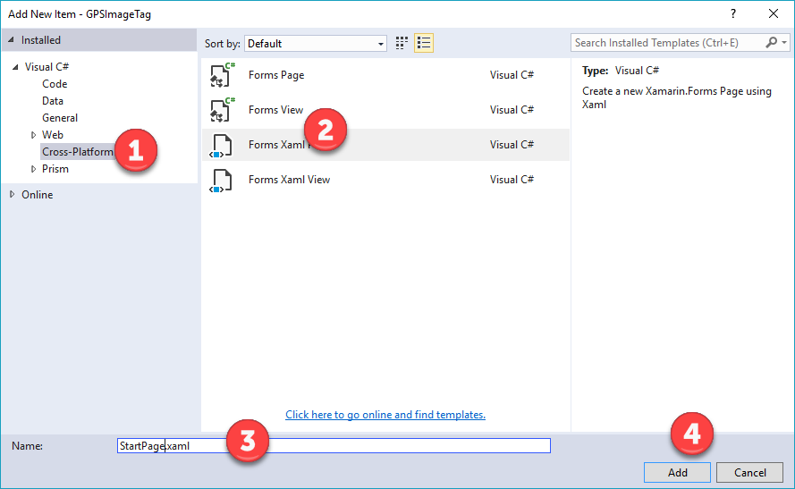
Open the new StartPage.xaml in the Xaml view and replace the Xaml code with the code below (1).
<?xml version="1.0" encoding="utf-8" ?>
<TabbedPage xmlns="http://xamarin.com/schemas/2014/forms"
xmlns:x="http://schemas.microsoft.com/winfx/2009/xaml"
x:Class="GPSImageTag.StartPage">
</TabbedPage>
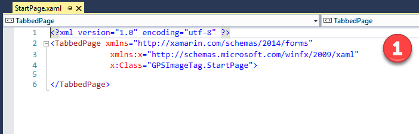
Now we need to define each of the tab page for each of the pages within our application. Open the StartPage.xaml.cs and add in the code below (1).
using GPSImageTag.Helpers;
using System;
using Xamarin.Forms;
namespace GPSImageTag
{
public partial class StartPage : TabbedPage
{
public StartPage()
{
InitializeComponent();
Title = "Welcome to GPSImageTag";
Children.Add(new PhotosPage());
Children.Add(new CameraPage());
BarBackgroundColor = Colours.TabBackgroundColor;
}
}
}
Now we need to update the starting page for our application. Open the App.xaml.cs file and update the App constructor with the following code (1).
public App()
{
InitializeComponent();
MainPage = new GPSImageTag.StartPage();
}
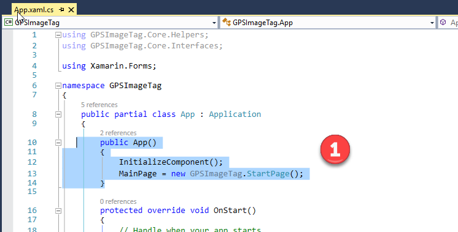
Let’s try out the changes to our application.
Next we need to set the GPsImageTag.UWP (1) as the Startup Project (2).
Press F5 to run the UWP app.
Now we have tabs being displayed (1). Click on the Sync Photos button (2). This will download the photos from Azure and displayed it in a list (3).
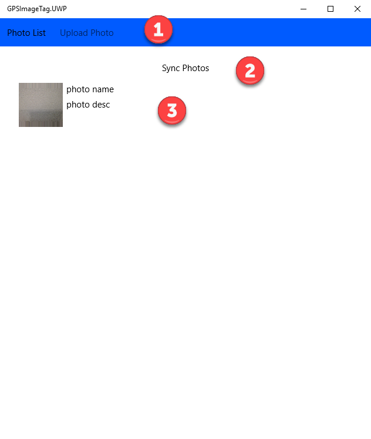
(Optional Android steps) Select the GPSImageTag.Droid project (1). Click on the Set as Startup Project (2).
(Optional Android steps) Press F5 to run the Android app.
(Optional Android steps) Now we have tabs being displayed (1). Click on the Sync Photos button (2). This will download the photos from Azure and displayed it in a list (3).
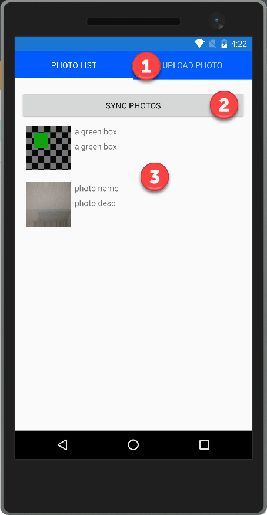
Congratulations on completing the hands on lab.